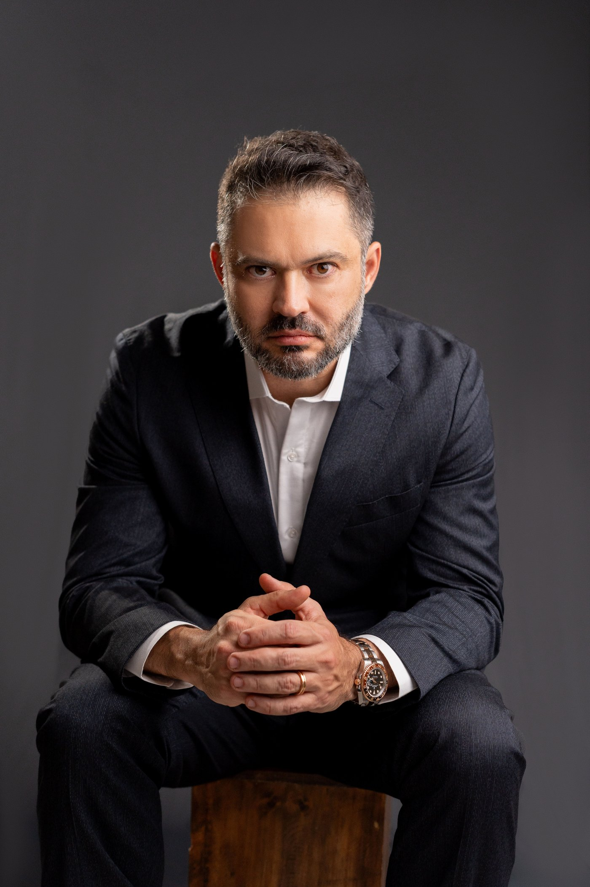
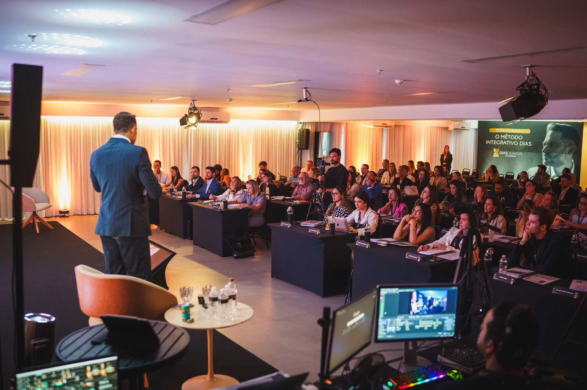

Plantões intermináveis
Você troca tempo por dinheiro numa equação sem saída. Cada hora trabalhada é uma hora a menos de vida, família e saúde própria.
Os protocolos, o raciocínio clínico e o modelo de negócio que formaram mais de 500 médicos ao lado do Dr. Dias Junior. Vagas por aplicação — não por pagamento.
Não é para quem não vai aplicar o que aprender.
Você passou anos estudando para salvar vidas. Mas ninguém te ensinou a construir uma carreira que te sustente com dignidade e liberdade.
Você troca tempo por dinheiro numa equação sem saída. Cada hora trabalhada é uma hora a menos de vida, família e saúde própria.
Medicina hormonal, funcional, ortomolecular. O campo avança rápido e a formação convencional não te preparou para o que os pacientes mais exigentes precisam.
Você sabe que vale mais do que cobra, mas não domina posicionamento, precificação nem captação de pacientes que entendam o real valor do seu conhecimento.
Três pilares integrados que transformam médicos competentes em autoridades incontestáveis.
Protocolos avançados de injetáveis, pellets hormonais, emagrecimento metabólico e oncologia integrativa. O repertório clínico que diferencia uma referência de um médico comum.
A "visão Dias Junior" sobre casos complexos. Aprenda a enxergar além do sintoma, conectar sistemas e construir diagnósticos que a medicina convencional não alcança.
Gestão, precificação e captação de pacientes high ticket. Transforme seu consultório em um negócio de alta performance sem abrir mão da ética e da excelência clínica.


CRM 44822 · MG
Formado em Medicina pela Universidade Severino Sombra, com especialização em Nutrologia, Prática Ortomolecular e Medicina Estética, o Dr. Dias Junior dedicou mais de 20 anos a uma única obsessão: elevar o padrão da medicina praticada no Brasil.
Referência nacional com mais de 3.000 implantes hormonais realizados e mais de 12.000 pacientes atendidos, já formou mais de 500 médicos em imersões pelo país. A Mentoria Select é o primeiro programa contínuo e individual que ele abre para um grupo seleto de profissionais.
"Médico bom não é o que sabe mais.Candidatar-se à Mentoria
É o que raciocina melhor." Dr. Dias Junior

"Abandonei os plantões 4 meses após iniciar a mentoria. Hoje tenho um consultório com lista de espera, atendendo pacientes que entendem e pagam pelo meu trabalho."
Dr. Rafael Monteiro (exemplo provisório)
Clínico Geral · Belo Horizonte/MG

"Em 6 meses tripliquei meu ticket médio e comecei a atender menos pacientes com muito mais qualidade. O raciocínio do Dr. Dias mudou completamente minha visão sobre medicina."
Dra. Camila Ferraz (exemplo provisório)
Ginecologia · Curitiba/PR

"O que mais me surpreendeu foi a profundidade clínica. Não é só gestão. É repertório, raciocínio e postura. Saí um médico completamente diferente."
Dr. Eduardo Salles (exemplo provisório)
Endocrinologia · São Paulo/SP

"Apliquei os protocolos de hormônios na primeira semana. Os resultados dos pacientes foram tão evidentes que as indicações começaram a vir sozinhas. A mentoria se pagou em 30 dias."
Dra. Patrícia Nogueira (exemplo provisório)
Nutrologia · Juiz de Fora/MG
A Mentoria Select opera com vagas extremamente limitadas para garantir atenção individual e resultado real. Cada candidato passa por uma análise criteriosa.
Preencha o formulário com honestidade. Queremos entender onde você está e para onde quer ir.
Nossa equipe avalia seu perfil, momento de carreira e alinhamento com o programa em até 48 horas.
Candidatos selecionados são convidados para uma conversa com a equipe do Dr. Dias Junior.
Os admitidos recebem acesso ao programa e iniciam uma jornada real de transformação de carreira.
Preencha com atenção. Cada campo nos ajuda a entender se existe alinhamento para avançarmos juntos. Respostas superficiais não avançam no processo seletivo.
O programa tem duração de 1 ano, com onboarding individual de planejamento estratégico, encontros e suporte contínuo ao longo de toda a jornada para dúvidas clínicas e estratégicas.
É um modelo híbrido. Você recebe um onboarding individual de planejamento estratégico de acordo com as suas necessidades, além de suporte direto e personalizado. Ao mesmo tempo, faz parte de grupos de networking exclusivos (WhatsApp) para troca de estratégias, vendas e discussão de casos com outros mentorados, e tem ingresso garantido para todas as imersões presenciais realizadas durante o período da mentoria.
Não é pré-requisito. O programa foi desenhado para conduzir médicos de qualquer ponto de partida ao domínio técnico e estratégico. O que é indispensável é CRM ativo e comprometimento real com a transformação.
Os mentorados têm acesso a suporte direto com o Dr. Dias Junior e sua equipe, plataforma e aplicativo próprios com aulas, cursos, protocolos, contratos e fornecedores, além da possibilidade de vivência prática (Fellow) acompanhando de perto a rotina da Clínica Dias Junior. O nível de proximidade é o diferencial central do programa.
O investimento é informado durante a etapa de entrevista, após a análise do perfil do candidato. A Mentoria Select é um programa high ticket, desenhado para médicos que compreendem que investir em desenvolvimento próprio é o maior retorno possível.
Sim. A Mentoria Select atende médicos de todo o Brasil. Parte do programa é conduzida de forma remota, com imersões presenciais estratégicas em datas programadas, incluindo vivências práticas na Clínica Dias Junior.
As vagas são extremamente limitadas por design. O programa não escala em volume, escala em profundidade. Cada turma é pequena para garantir atenção e resultado real para cada participante.